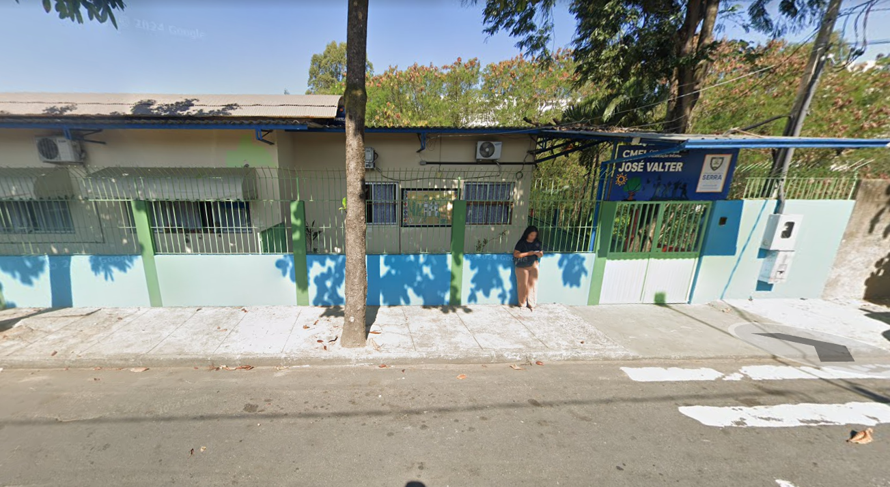
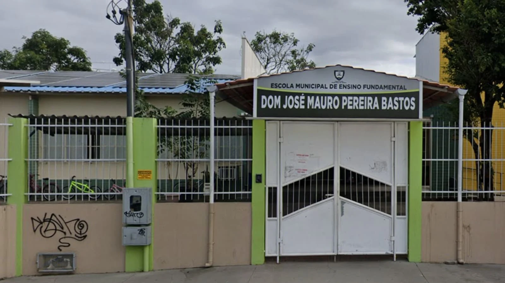
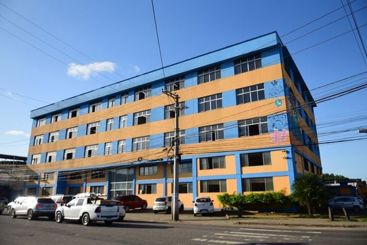
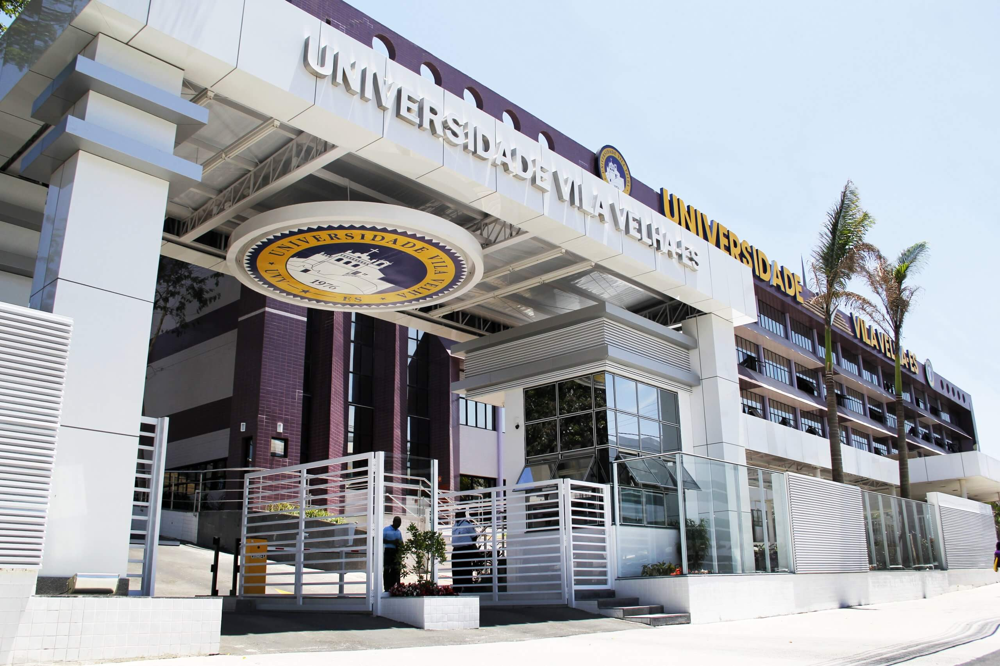
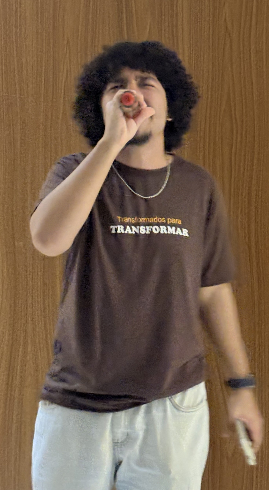
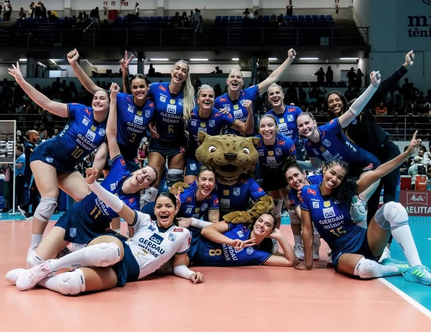
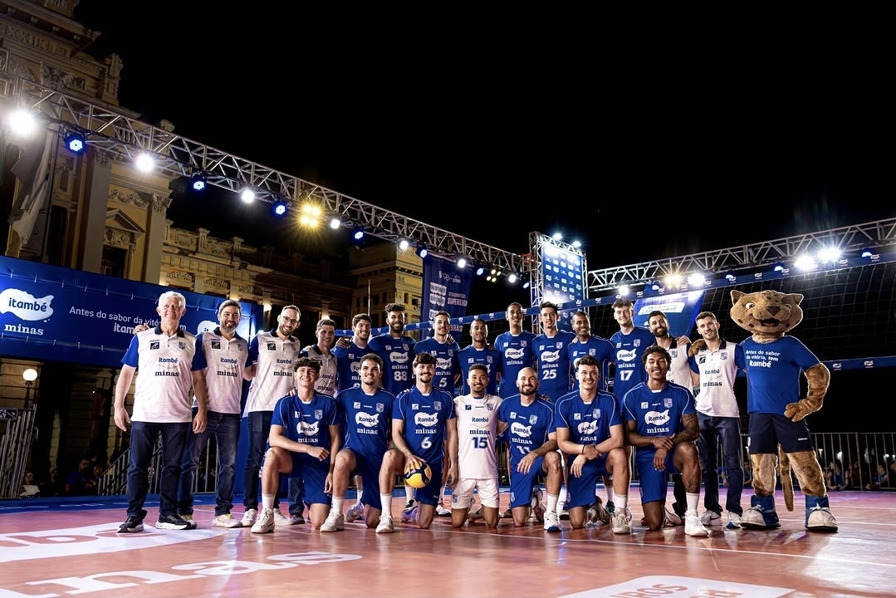
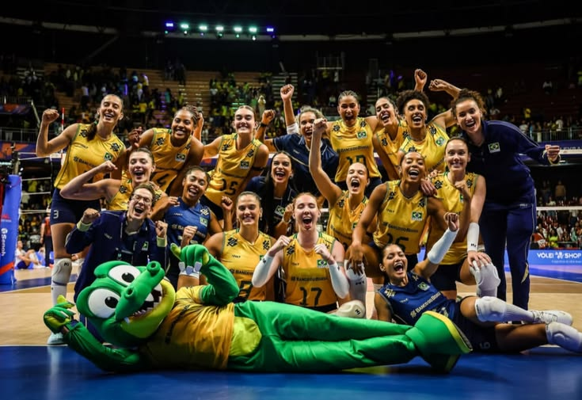
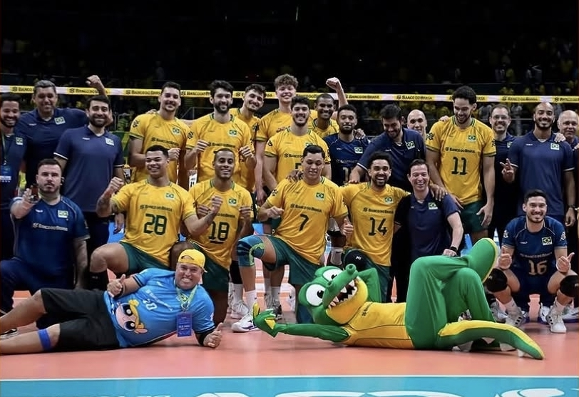

Olá, eu sou
Brayan Cabral Matias
Desenvolvedor Front-End
Tenho 18 anos, sou estudante em Ciência da Computação na Universidade Vila Velha e vejo com bons olhos a profissionalização na área do Desenvolvimento Web

Olá, eu sou
Tenho 18 anos, sou estudante em Ciência da Computação na Universidade Vila Velha e vejo com bons olhos a profissionalização na área do Desenvolvimento Web

Nasci em Vila Velha, mas com apenas 2 anos, minha família e eu nos mudamos para a Serra. Esta foi a escola infantil onde estudei no mesmo ano de mudança, concluindo a formação com 5 anos, já sabendo ler e escrever.
Em meio à tantas opções de escolas, meus pais optaram por procurar uma escola um pouco mais distante de nossa casa, mas que tivesse uma qualidade de ensino maior. Conhecida pela quantidade de alunos que foram aprovados para o IFES, meus pais encontraram essa escola, esta que permaneci por todo o período de meu ensino fundamental.


Esta foi a escola onde estudei em meu ensino médio, em concomitância cursei o técnico em logística em regime integral de ensino. Pude aproveitar cada momento e oportunidade em meio ao ensino médio, realizando projetos, apresentações e inclusive participando de competições com esses projetos tanto na própria escola, quanto na UFES.
Após me formar no ensino médio, passei um período de 6 meses em que tive que dividir minha rotina com trabalho e com a faculdade, por certo período, cursei Ciência da computação na Multivix, onde aprendi algumas coisas e passei estresse com outras, mas agora é passado. Certo dia, recebi um e-mail, anunciando que havia passado no processo seletivo do programa nossa bolsa, onde recebi uma bolsa integral, não pensei duas vezes, tranquei meu curso na Multivix e deixei meu trabalho, para que pudesse me dedicar à nova oportunidade.


Desde minha infância tive grande apreço pela música, passando por diversos estilos, mas meus favoristos são: pop, jazz, mpb, r&b e gospel.
Juntamente com o fato de gostar de música, também desenvolvi gosto pelo canto, por conta de timidez e pouca instrução, me mantive afastado do canto, deixando-o como hobbie pessoal, que compartilhava somente com os mais íntimos, mas ao entrar para igreja, senti uma grande vontade de entrar para o ministério de louvor, onde estou até hoje, passei por grandes experiências e pude evoluir muito.

No meu último ano do ensino fundamental, fui apresentado ao vôleibol em aulas de educação física e desde então fiquei fissurado por esse esporte. Meu time do coração é o Minas Tênis Clube.



